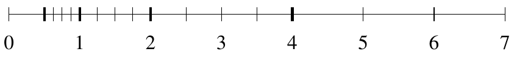

19.1. Floating Point Arithmetic#
19.1.1. Binary numbers#
Integers in a computer are stored as binary numbers, that is, using base-2. For example, the binary number \(1011001_2\) corresponds to the decimal number
or, in Julia:
Int(0b1011001)
89
Unsigned integers can be represented in Julia using the types UInt8, UInt16, etc. The actual binary representation in the computer can be seen as a bitstring:
bitstring(UInt8(89))
"01011001"
So, for example the UInt64 type can represent numbers between \(0\) and \(1111\ldots 1111_2 = 2^{63} + 2^{62} + \cdots + 2^1 + 2^0 = 2^{64} - 1\)
19.1.1.1. Signed numbers#
There are various ways of representing negative numbers, for example by using one of the bits as a “sign bit” (0 meaning positive, 1 meaning negative). However, the so-called two’s complement format is widely used to store signed integers. When the most significant bit (representing the highest power) is equal to 1, the number is negative. For \(n\) bits, the two’s complement is defined by the sum of the number and its two’s complement equals \(2^n\). For example, with 8 bits, the two’s complement of \(01011001_2\) is \(10100111_2\), since
This means that with signed integers, the number \(10100111_2\) represents the negative of \(01011001_2\), that is, \(-89_{10}\).
In Julia, signed integers are represented using the types Int8, Int16, etc:
bitstring(Int8(89))
"01011001"
bitstring(Int8(-89))
"10100111"
Using this format, the type Int64 can for example represent numbers between \(11111\ldots1111_2 = -2^{63}\) and \(01111\ldots1111_2 = 2^{63} - 1\).
[typemin(Int64) typemax(Int64); -2^63 2^63-1]
2×2 Matrix{Int64}:
-9223372036854775808 9223372036854775807
-9223372036854775808 9223372036854775807
19.1.1.2. Fixed point numbers#
One way to represent fractional numbers is as fixed-points. For example,
This could be useful for applications that need a fixed number of binary digits. But since most scientific applications need numbers with wide ranges of magnitudes, computers use floating point instead of fixed point to represent fractional numbers.
19.1.2. Floating point numbers#
19.1.2.1. Scientific notation#
Recall how a (decimal) number is written using scientific notation:
Floating point numbers are represented in a similar way, as
with base \(\beta\) and precision \(p\). The number is normalized if \(d_0\ne0\) (use a special case to represent \(0\)).
19.1.2.2. Properties of floating point numbers#
The gaps between adjacent numbers scale with the size of the numbers
For all \(x\), there exists a floating point \(x'\) such that \(|x-x'| \le \epsilon_\mathrm{machine} |x|\)
Example: \(\beta=2, p=3, e_\mathrm{min}=-1, e_\mathrm{max}=2\)

19.1.2.3. Special quantities#
\(\pm\infty\) is returned when an operation overflows
\(x/\pm\infty=0\) for any number \(x\), \(x/0=\pm\infty\) for any nonzero number \(x\)
Operations with infinity are defined as limits, e.g. \( 4-\infty = \lim_{x\rightarrow\infty} 4-x = -\infty \)
NaN (Not a Number) is returned when the an operation has no well-defined finite or infinite result
Examples: \(\infty-\infty\), \(\infty/\infty\), \(0/0\), \(\sqrt{-1}\), \(\mathrm{NaN}\odot x\)
19.1.2.4. IEEE Single Precision#
1 sign bit, 8 exponent bits, 23 significand bits:
Represented number:
Special cases:
Examples:
19.1.2.5. IEEE Floating Point Data Types#
19.1.3. IEEE Floating point demo#
19.1.3.1. Comparing floating point numbers approximately#
Always expect small relative errors in floating point computations:
x = (1 - 2/3) * 5 # Approximately 5/3
x == 5/3 # Not exactly 5/3
false
To check for equality, instead compute the error and check that it is small:
abs(x - 5/3)
2.220446049250313e-16
Alternatively, use the julia isapprox or ≈ method, which uses a combination of an appropriate relative and absolute tolerance:
x ≈ 5/3
true
19.1.3.2. Overflow/underflow#
1.0
1.0
-1.0
-1.0
1e100
1.0e100
1e-100
1.0e-100
1e308
1.0e308
1e308 * 2
Inf
1e-308
1.0e-308
1e-308 / 2^51
5.0e-324
1e-308 / 2^52
0.0
19.1.3.3. Cancellation#
x = rand()
y = rand()
z = x - y
0.2504304619588281
x1 = x + 1e10
y1 = y + 1e10
z1 = x1 - y1
0.2504310607910156
z1 - z
5.988321875038949e-7
19.1.3.4. Epsilon#
1 + 1e-20
1.0
(1 + 1e-20) - 1
0.0
1 + 1e-16
1.0
1 + 2e-16
1.0000000000000002
(1 + 2e-16) - 1
2.220446049250313e-16
e = 1.0
while 1 + e > 1
e = e/2
println(e)
end
0.5
0.25
0.125
0.0625
0.03125
0.015625
0.0078125
0.00390625
0.001953125
0.0009765625
0.00048828125
0.000244140625
0.0001220703125
6.103515625e-5
3.0517578125e-5
1.52587890625e-5
7.62939453125e-6
3.814697265625e-6
1.9073486328125e-6
9.5367431640625e-7
4.76837158203125e-7
2.384185791015625e-7
1.1920928955078125e-7
5.960464477539063e-8
2.9802322387695312e-8
1.4901161193847656e-8
7.450580596923828e-9
3.725290298461914e-9
1.862645149230957e-9
9.313225746154785e-10
4.656612873077393e-10
2.3283064365386963e-10
1.1641532182693481e-10
5.820766091346741e-11
2.9103830456733704e-11
1.4551915228366852e-11
7.275957614183426e-12
3.637978807091713e-12
1.8189894035458565e-12
9.094947017729282e-13
4.547473508864641e-13
2.2737367544323206e-13
1.1368683772161603e-13
5.684341886080802e-14
2.842170943040401e-14
1.4210854715202004e-14
7.105427357601002e-15
3.552713678800501e-15
1.7763568394002505e-15
8.881784197001252e-16
4.440892098500626e-16
2.220446049250313e-16
1.1102230246251565e-16
eps()
2.220446049250313e-16
b = 2.0^100
1.2676506002282294e30
(b + eps()*b) - b
2.81474976710656e14
(b + eps()/2*b) - b
0.0
19.1.3.5. Signed zeros#
0.0
0.0
+0.0
0.0
-0.0
-0.0
19.1.3.6. Infinity#
1.0/0.0
Inf
-1.0/0.0
-Inf
0.0/0.0
NaN
Inf
Inf
1/Inf
0.0
-1/Inf
-0.0
-1/-Inf
0.0
2*Inf
Inf
Inf + Inf
Inf
Inf^Inf
Inf
19.1.3.7. NaN (Not-a-Number)#
Inf-Inf
NaN
Inf/Inf
NaN
0.0/0.0
NaN
NaN + 123
NaN
19.1.3.8. Check for NaN#
x = NaN
x == NaN
false
x == x
false
isnan.([1, 2, 3, NaN, Inf])
5-element BitVector:
0
0
0
1
0
isinf.([1, 2, 3, NaN, Inf])
5-element BitVector:
0
0
0
0
1
19.1.3.9. Round to even#
e = eps()/2
1 + e
1.0
1 + 2*e
1.0000000000000002
((1 + 2*e)-1) / e
2.0
((1 + 3*e)-1) / e
4.0
((1 + 4*e)-1) / e
4.0
for mul = 0:16
println([mul, ((1 + mul*e) - 1) / e])
end
[0.0, 0.0]
[1.0, 0.0]
[2.0, 2.0]
[3.0, 4.0]
[4.0, 4.0]
[5.0, 4.0]
[6.0, 6.0]
[7.0, 8.0]
[8.0, 8.0]
[9.0, 8.0]
[10.0, 10.0]
[11.0, 12.0]
[12.0, 12.0]
[13.0, 12.0]
[14.0, 14.0]
[15.0, 16.0]
[16.0, 16.0]
19.1.3.10. View hex/bin representations#
using Printf
split32(s) = s[1] * " " * s[2:9] * " " * s[10:32]
showbits(x) = @printf("%10.8g = %s\n", x, split32(bitstring(Float32(x))))
showbits.([0, -0, Inf, -Inf, NaN, -NaN]);
showbits.(1:10);
showbits.(1 .+ (0:10).*2^-23);
showbits.(2 .- (10:-1:0).*2^-23);
0 = 0 00000000 00000000000000000000000
0 = 0 00000000 00000000000000000000000
Inf = 0 11111111 00000000000000000000000
-Inf = 1 11111111 00000000000000000000000
NaN = 0 11111111 10000000000000000000000
NaN = 1 11111111 10000000000000000000000
1 = 0 01111111 00000000000000000000000
2 = 0 10000000 00000000000000000000000
3 = 0 10000000 10000000000000000000000
4 = 0 10000001 00000000000000000000000
5 = 0 10000001 01000000000000000000000
6 = 0 10000001 10000000000000000000000
7 = 0 10000001 11000000000000000000000
8 = 0 10000010 00000000000000000000000
9 = 0 10000010 00100000000000000000000
10 = 0 10000010 01000000000000000000000
1 = 0 01111111 00000000000000000000000
1.0000001 = 0 01111111 00000000000000000000001
1.0000002 = 0 01111111 00000000000000000000010
1.0000004 = 0 01111111 00000000000000000000011
1.0000005 = 0 01111111 00000000000000000000100
1.0000006 = 0 01111111 00000000000000000000101
1.0000007 = 0 01111111 00000000000000000000110
1.0000008 = 0 01111111 00000000000000000000111
1.000001 = 0 01111111 00000000000000000001000
1.0000011 = 0 01111111 00000000000000000001001
1.0000012 = 0 01111111 00000000000000000001010
1.9999988 = 0 01111111 11111111111111111110110
1.9999989 = 0 01111111 11111111111111111110111
1.999999 = 0 01111111 11111111111111111111000
1.9999992 = 0 01111111 11111111111111111111001
1.9999993 = 0 01111111 11111111111111111111010
1.9999994 = 0 01111111 11111111111111111111011
1.9999995 = 0 01111111 11111111111111111111100
1.9999996 = 0 01111111 11111111111111111111101
1.9999998 = 0 01111111 11111111111111111111110
1.9999999 = 0 01111111 11111111111111111111111
2 = 0 10000000 00000000000000000000000